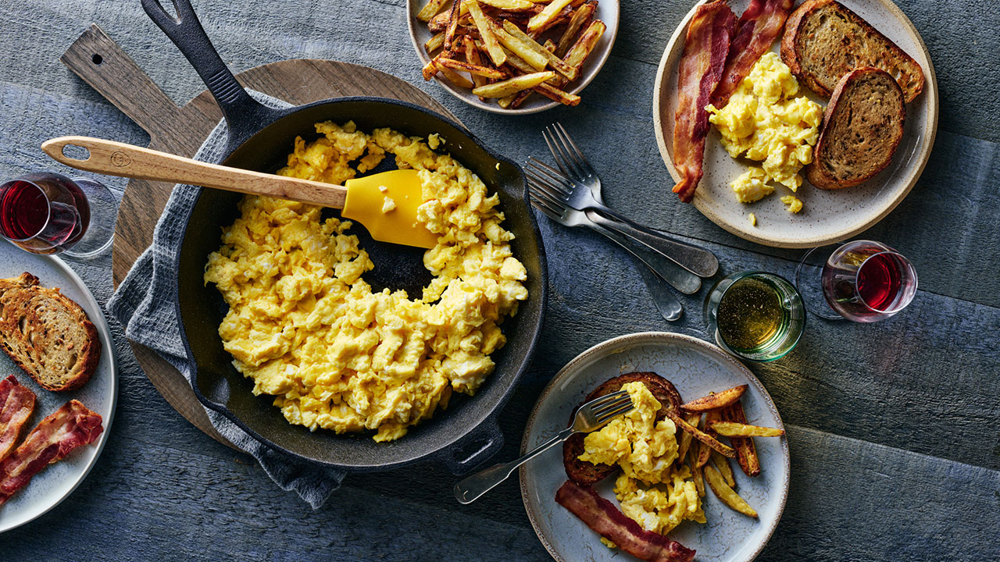

Scrambled Eggs

Description
"Making scrambled eggs isn’t complicated. A bit of salt and pepper for flavour, a little butter to cook, and fresh eggs is all you need for a perfect breakfast. You can modify this recipe to include your favourite ingredients such as cheese, salsa, vegetables, and herbs." - Egg.ca
List of Ingredients
- 2 eggs
- Pinch of Salt and Pepper
- 1 tbsp (15ml) Butter
Cooking Steps
- Whisk eggs, salt and pepper in small bowl. Melt butter in non-stick skillet over medium heat.
- Pour in egg mixture and reduce heat to medium-low. As eggs begin to set, gently move spatula across bottom and side of skillet to form large, soft curds.
- Cook until eggs are thickened and no visible liquid egg remains, but the eggs are not dry.
Chef's Notes
Sprinkle eggs with shredded cheese before serving, such as cheddar, Monterey Jack or mozzarella.
Fill a tortilla, toasted bagel or English muffin for a quick and portable breakfast.
Whisk in 2 tbsp (30 mL) milk for creamier eggs.
Link to Scrambled Eggs Recipe!
Return to Homepage